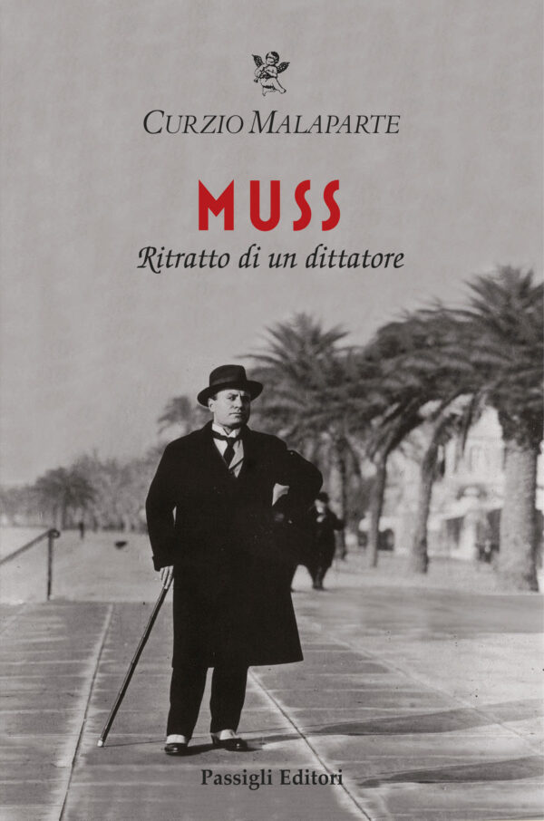

22:41 · 3 OPERE
Un appunto su un libro di Jean Améry.
Il filo del discorso
Una lettura di Jean Améry mette al centro l’esperienza della tortura e il limite del pensiero davanti alla violenza. Dr Divago annuncia il volume conosciuto in inglese come At the Mind’s Limits e in italiano come Un intellettuale ad Auschwitz, poi ne commenta il rapporto fra aggressione fisica, dignità e perdita della fiducia nel mondo. La polemica con la nozione di banalità del male di Hannah Arendt precede un confronto con Muss di Curzio Malaparte. Il discorso si allarga al possesso del proprio corpo, ai rapporti con il potere e alla libertà, per tornare all’isolamento dell’intellettuale nel campo. I paragoni conclusivi con l’emarginazione della cultura contemporanea sono proposti dal relatore senza cancellare la specificità della persecuzione nazista.
I libri nel discorso

Intellettuale a Auschwitz
Note sul riferimento
Copertina: Bollati Boringhieri · Varianti · 2011 · traduzione di Enrico Ganni
Immagine autentica dell’opera, controllata visivamente; l’edizione di riferimento non è attribuita al filmato.
Jean Améry, il titolo inglese At the Mind’s Limits e il volume italiano di Bollati Boringhieri sono annunciati. Il titolo italiano è ripreso esplicitamente a 1170 s.

La banalità del male. Eichmann a Gerusalemme
Note sul riferimento
Copertina: Feltrinelli · Universale Economica Saggi · 2023
Immagine autentica dell’opera, controllata visivamente; l’edizione di riferimento non è attribuita al filmato.
La banalità del male e Hannah Arendt sono nominate nella lettura polemica di un passo di Améry.

Muss. Il grande imbecille
Note sul riferimento
Copertina dell’edizione che riunisce Muss e Il grande imbecille: Passigli · Muss. Ritratto di un dittatore, seguito da Il grande imbecille · 2026
Copertina autentica del volume Passigli del 2026 che riunisce i due scritti. Il titolo collettivo annunciato corrisponde all’edizione Luni del 1999, riscontrata bibliograficamente; l’immagine non è attribuita all’esemplare del filmato.
Muss. Il grande imbecille e Malaparte sono annunciati prima del ricordo del primo colpo ricevuto.